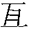

增田兄：
五月十日の御手紙は捭見しました。僕の前の手紙に書いた漢以瘄の「ユーモア」云々の説は取りけします。
今日、内山書店に賴んで小説八種送り致しました。蘘達夫張天翼鳑君のものは私が特にいれたのです。近代の作で私のもの丈なら何んだかさびしい感じがします。若しこの二册の中で何か取る可きものがあったら少し訳して……いか ですかと。
ですかと。
昨日内山老版と遇ひました、不相変元氘で最早本箱に向って何かを手入して居ります。そーしてあなたから下さった物品も戴きました。余りよい物ですからどーも恐縮の至りで厚く御祛申し上げます。「オモチャ」は「ミス」許に洚葖され、「タバコ」道具は未僕の手ににぎられで居ますが併しそれを置くに相當する「テーブル」がないんだから少しく困って居ります。
そーして小説の代金は送る必要はないです。本當に微々たるものです。北新書局に買はしたのだから私も現金を払ひません。現金はなるべく自分の手ににぎって置く可きもので、五十年の研究を積んで発明したですからあなたも宓行しなさい。 草々頓首
洛文 五月二十二日
水滸四本
第三回『魯智深大閙五萚山』は或は「ユーモア」と云ふ可きか。
鏡花緣四本
第二十二、二十三及三十三回は支那には可笑しいとされ
て居ますが併日本では習慣が違ふからどーでしょー。
儒林外史二本
宓に訳しにくい。第十二回の『俠客虚設人頭會』（筋は十三回の始まで

って居る）、或は第十三回の中にも取る可きものが有ると思ふ。何典一本
滑稽の本として近瘄頗る名高かいが宓は「江南名士」式滑稽で頗る漶薄だ。殆んど全部俚語と俗語で組成して居ますから支那の北方人でも解りにくい。今度は只支那にこんな本があると御痎にかけて上げるまです。
達夫全集第六蜅一本
『二詩人』の中には朘口の方が多いが併し「ユーモア」も少しくあると思ふ。「モデル」は王獨清と馬某です。
今古奇觀二本
中に「ユーモア」を見たらしい篲えがないのです。
老殘逯記一本
第四から第五回までの分は「ユーモア」と思はれたものでしょーと思ふが併し支那に于いては事宓です。
小彼得一本
作者は最近に出て瘄たもので滑稽な作風があると云はれて居る。例へば『皮幘』、『稀鬆（可笑しい）の戀愛故事』が如し。
[译文]
增田兄：
五月十日惠函奉悉。我前信写到汉以来的“幽默”云云，取消。
今天托内山书店寄上小说八种。郁达夫、张天翼两君之作，我特为选入。近代的作品，只选我的，似觉寂寞。这两册中，如有可取者，即选译一些，如何？
昨天遇到内山老板，精神如前，马上又在对着书橱整理什么了。你送我的东西亦收到，赠品太好，使我不胜惶悚，并深为感谢。“玩具”已被“密斯”许没收，烟具尚捏在我手中，但缺乏相称的“桌子”放它，有点为难。
小说的书款不必寄来，数目极微。托北新书局买书，我也不付现款。现金应尽可能捏在自己手中，这是积五十年之经验所发明，盼望你也实行之。 草草顿首
洛文 五月二十二日
《水浒》四本
第三回《鲁智深大闹五台山》，或可称为“幽默”罢。
《镜花缘》四本
第二十二、二十三及三十三回，中国是以为可笑的，但日本习惯不同，未知如何？
《儒林外史》二本
实在难译。第十二回的《侠客虚设人头会》（情节贯串到第十三回开头），或在十三回中也有可取之处。
《何典》一本
作为滑稽书，近来颇有名，其实是“江南名士”式的滑稽，甚为浅薄。全书几乎均以方言、俗语写成，连中国北方人也费解。仅为了让你看一看，知道中国还有这类书。
《达夫全集》第六卷一本
《二诗人》中有很多挖苦人的话，但我觉得有点“幽默”。“模特儿”是王独清与马某。
《今古奇观》二本
记不起在里面看到过“幽默”的东西。
《老残游记》一本
从第四回到第五回，似乎被认为是幽默罢，但在中国却是实事。
《小彼得》一本
作者是最近出现的，被认为有滑稽的风格。例如《皮带》，《稀松（可笑）的恋爱故事》。